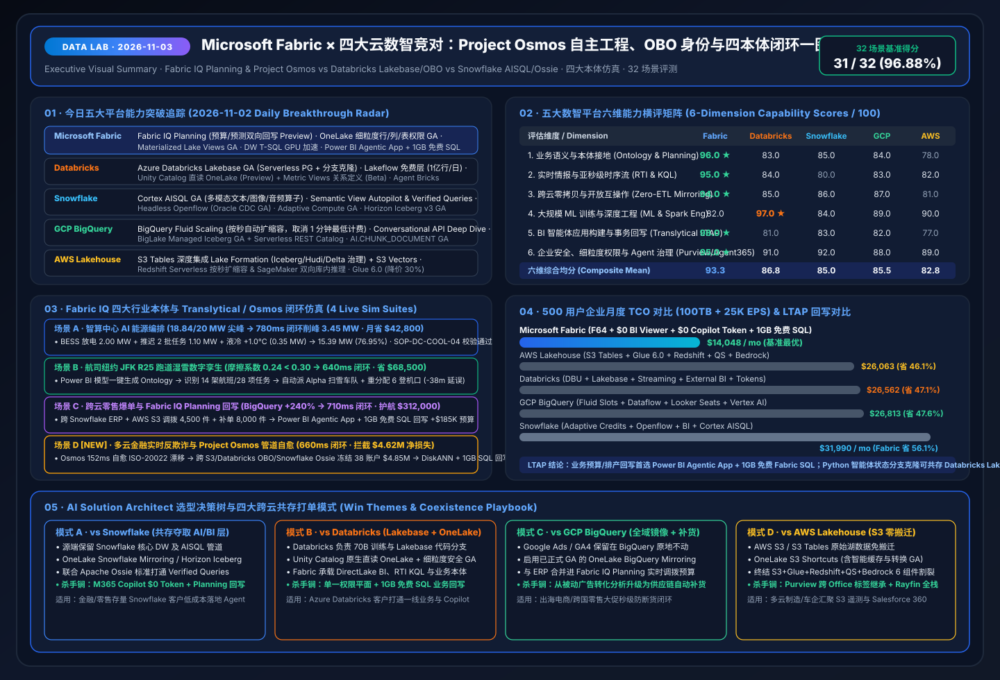

AI Solution Architect 全景工作台：Fabric IQ 本体 · 五云攻防 · TCO 测算 · 实时仿真
融合 FabCon & SQLCon Barcelona 2026 最新发布与 Microsoft IQ (Work IQ / Fabric IQ / Foundry IQ / Web IQ) 四大智能底座，对标 Databricks、Snowflake、GCP BigQuery 与 AWS Lakehouse。
Fabric 六维综合均分
93.3 / 100
领先 Databricks (86.8) / GCP (85.5) / Snowflake (85.0)
500 用户月度 TCO 节省
46.1% – 56.1%
$14,048/mo ($0 BI Viewer + $0 Copilot 额外 Token)
四大跨云本体闭环延迟
640ms – 780ms
AIDC 削峰 3.45MW · 零售 +$312K · 金融反欺诈挽回 $4.62M
DirectLake + KQL 高并发优势
4.54x – 9.47x
500 并发 + 25K EPS 下 P95 仅 940ms (对比 8,900ms)
Microsoft Fabric (93.3) vs Databricks (86.8) 六维实测对比 数据来源: sealed report.json
售前架构师攻防话术卡 (AI SA Battlecard)
企业负载参数调节 (实时重算五云月度账单)
💡 TCO 精算洞察
在 F64 及以上容量下，Power BI 报表消费用户免除按人头 Viewer 许可费，且 M365 Copilot 调用 Fabric IQ 语义模型与 Ontology 零额外 AI Token 计费。
五大云数智平台月度总拥有成本 (Monthly TCO Breakdown)
Fabric IQ × Foundry 多智能体 5 步闭环流水线
本体拓扑影响图谱 · Teams 人在回路审批与回写控制台
01 · 每日研究强制交付 (2026-11-03)：五大平台竞对攻防、Project Osmos、OBO 身份与四本体一图流总结卡 (Executive Visual Summary SVG) 🔍 查看原始高清 SVG

05 · Project Osmos 自主数据工程 × 跨云 OBO 智能体身份 × Apache Ossie 语义互操作架构 (2026-11-03 新增) 🔍 查看原始高清 SVG

04 · LTAP 湖仓事务分析一体与智能体回写架构对比 (Fabric Translytical vs Lakebase / AISQL / BigQuery / S3 Tables) 🔍 查看原始高清 SVG


🎬 FabCon & SQLCon Barcelona 2026 五支官方实机演示直通车 (Microsoft CDN MP4)
1. Fabric IQ in M365 Copilot (GA)
在 M365 Copilot Chat 与 Cowork 中零额外 Token 直接对话企业语义模型与本体。
2. Power BI Agentic App + 1GB 免费 SQL
自然语言对话构建带 Write-back 回写能力的交互式业务应用，附赠 1GB Fabric SQL。
3. 开源 Rayfin SDK/CLI + OneLake IQ + Osmos
全栈智能体数据应用脚手架、跨组织 RDF 本体共享与 Osmos 自主数据工程智能体。